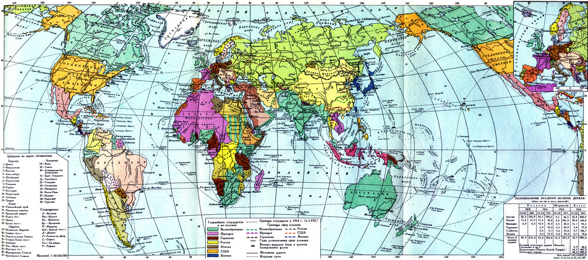

Главы:
 |
|
Термины:
|
Карта мира накануне Первой мировой войны
|
В результате образования двух мощных военно-политических блоков — Антанты и Тройственного союза — борьба великих держав за сферы влияния и рынки сбыта в мире усилилась.Столкновение между крупными европейскими державами становилось неизбежным. Стремление стран Тройственного союза, в особенности Германской империи, конкурировать с Англией и Францией за роль лидирующего государства в Европе все более обостряло внешнеполитические отношения. К 1914 г. накопившиеся противоречия привели к вооружённому конфликту, который стал первой войной, имевшей глобальный масштаб и затронувшей 38 государств по всему миру.
К Первой мировой войне привёл комплекс различных факторов, главными из которых были борьба крупных европейских держав за территории и рынки сбыта в мире, территориальные споры между Германией и Францией по поводу принадлежности региона Эльзаса и Лотарингии, а также стремление правящих кругов Австро-Венгрии расширить своё влияние на Балканах. Желание Германии конкурировать с Англией и Францией за африканские колонии придавало столкновению держав глобальный характер.
Непосредственным поводом для начала вооружённого конфликта стало убийство наследника австрийского престола эрцгерцога Франца Фердинанда, которое произошло в г. Сараево 28 июня 1914 г. Его организовал сербский националист Гаврило Принцип. Это событие привело к ответной реакции со стороны руководства Австро-Венгрии, которое выдвинуло Сербии ультиматум, содержавший в себе требования, нарушавшие суверенитет этого государства. Сербское правительство обратилось за помощью к Российской империи, которая являлась постоянным союзником этого балканского государства. Несмотря на жёсткие условия Австро-Венгрии, сербское руководство согласилось принять их, за исключением допуска на территорию Сербии австрийских чиновников и военных. Такой ответ не устроил правящие круги Австро-Венгрии, та разорвала дипломатические отношения с Сербией и 28 июля 1914 г. объявила ей войну. В ответ Россия начала общую мобилизацию. Германские власти потребовали от императора Николая II прекратить мобилизацию. Получив отказ, германский посол передал российскому министру иностранных дел С. Д. Сазонову ноту с объявлением Германией войны России. Это произошло 19 июля (1 августа) 1914 г. Впоследствии в войну вступили Англия и Франция. Вооружённый конфликт Австро-Венгрии и Сербии перерос в полномасштабную войну.
После вступления Англии, Франции и России в Первую мировую войну в Европе образовалось два фронта — Западный (во Франции и Бельгии) и Восточный (против России). Также в 1914 г. на стороне Германии в войну вступила Турция. Таким образом возник ещё один фронт — Кавказский.
Первоначально германское военное командование планировало реализовать так называемый план Шлиффена, который заключался в стремительном наступлении на территорию Франции и выведении её из войны. План предполагал продвижение немецких армий через территорию Бельгии и захват Парижа. После завершения войны с Францией германское командование планировало направить все силы на войну с Россией. Чтобы помешать активному немецкому наступлению, российское командование по просьбе союзников начало осуществлять Восточно-Прусскую операцию (август — сентябрь 1914 г.).
В Восточной Пруссии действовали 1-я и 2-я русские армии под командованием генералов П. К. Ренненкампфа и А. В. Самсонова. Первоначально операция для России складывалась успешно. В сражении под Гумбинненом немецкие войска потерпели поражение. Германское командование было вынуждено направить в Восточную Пруссию дополнительные воинские части. Воспользовавшись бездействием П. К. Ренненкампфа, немцы смогли окружить 2-ю армию генерала Самсонова. В плен попало около 30 тыс. русских солдат, а Самсонов, скорее всего, покончил с собой. В итоге русская армия была вытеснена с территории Восточной Пруссии. Переброска значительных германских сил с Западного фронта на Восточный позволила англо-французским войскам отстоять Париж. План молниеносной войны Германии против Франции был сорван. Позднее главнокомандующий французскими вооружёнными силами маршал Фош подвёл итоги военной кампании 1914 г. на Западном фронте: «Если Франция не была стёрта с лица Европы, то этим прежде всего мы обязаны России, поскольку русская армия своим активным вмешательством отвлекла на себя часть сил и тем позволила нам одержать победу на Марне».
Намного успешнее для русской армии положение складывалось на юго-западном участке Восточного фронта. В ходе Галицийской битвы (18 августа — 21 сентября 1914 г.) русские войска противостояли австро-венгерским армиям. Русским силам удалось продвинуться вглубь территории Австро-Венгрии на 300 км. В результате наступления был взять город Львов. Множество австро-венгерских солдат попали в плен. На Кавказе русские армии также довольно успешно действовали против турецких войск. В итоге кампания 1914 г. не принесла успеха ни одной из сторон. Перед Германией и её союзниками появилась перспектива ведения затяжной войны на два фронта. Войскам стран Антанты удалось не допустить быстрого разгрома Франции. Россия, выступив в поддержку своих союзников, подтолкнула германское командование к активным действиям, что создавало для Германии и Австро-Венгрии необходимость одновременно воевать против всех своих врагов.
1915 г. оказался для русской армии крайне неудачным, поскольку германское командование сосредоточило на Восточном фронте крупные силы и провело успешное наступление. Стабилизация военных действий на Западном фронте позволила Германии переключиться на борьбу с Россией. В апреле 1915 г. немецкие и австро-венгерские войска в районе Горлицы (Галиция) начали крупномасштабное наступление с целью окружить и разгромить русские войска. Положение русских войск ещё более осложнялось начавшимся «снарядным голодом», который выражался в острой нехватке оружия, в частности, винтовок и боеприпасов. В связи с невозможностью эффективно обороняться русские войска начали стремительно отступать на восток. Польские земли, Галиция и часть Прибалтики были оставлены. Захватив множество территорий, германское командование все же не смогло вывести Россию из войны. Кампания русской армии 1915 г. была названа «великим отступлением».
В связи с неудачами на фронте пост Верховного главнокомандующего в августе 1915 г. занял сам император Николай II. До этого момента пост Верховного главнокомандующего принадлежал великому князю Николаю Николаевичу Романову — дяде императора. Этот шаг должен был повысить боеспособность русских войск, вдохновить солдат и всё население Российской империи на продолжение войны с Германией и её союзниками. Николай II лишь номинально являлся главнокомандующим и не вмешивался в управление войсками. Однако теперь в случае военных неудач вся ответственность за положение на фронте ложилась на императора, что только подрывало его авторитет в российском обществе.
Несмотря на поражение, русская армия сохранила боеспособность, и в 1916 г. было предпринято наступление, которое должно было привести к освобождению захваченных немцами и австро-венграми территорий. Военная операция была разработана талантливым полководцем, главнокомандующим войсками Юго-Западного фронта А. А. Брусиловым (1853–1926). По его плану русские армии должны были одновременно наступать в четырёх разных направлениях, не позволив австро-венграм маневрировать резервами. Прорыв начался 22 мая (4 июня) 1916 г. В результате мощного наступления русских войск австро-венгерские армии были вынуждены отступить на 120 км. Русская армия взяла территорию Буковины и часть Галиции.
Брусиловский прорыв – военная наступательная операция русской армии, под руководством генерала А. А. Брусилова, проведённая 22 мая – 7 сентября 1916 г., которая привела к поражению австро-венгерских армий и взятию русскими войсками.
Успех Брусиловского прорыва побудил правящие круги Румынии вступить в войну на стороне Антанты. Однако её армия была слишком слаба, чтобы противостоять германским и австро-венгерским войскам. В связи с продвижением русской армии Германия была вынуждена направить на помощь Австро-Венгрии дополнительные силы с Западного фронта, где происходила знаменитая битва в районе города Верден, названная «верденской мясорубкой». Натиск немцев на англо-французские позиции был ослаблен.
Сконцентрировав значительные военные силы на Восточном фронте, германскому командованию удалось остановить Брусиловский прорыв. Австро-венгерские войска нанесли удар по Румынии и захватили Бухарест. Несмотря на такой исход, военная кампания 1916 г. была успешной для России, поскольку Австро-Венгрии был нанесён чувствительный удар. За время Брусиловского прорыва потери австро-венгерских войск составили более 500 тыс. человек убитыми и пленными.
На Кавказском фронте в 1916 г. боевые действия для русских войск складывались ещё более удачно. Были взяты турецкие крепости Эрзерум, Трапезунд и Эрзинджан. В итоге продвижение русских войск в глубь турецкой территории составило 250–300 км. Начавшаяся в Петрограде Февральская революция нарушила планы российского командования начать общее наступление на всех фронтах весной 1917 г. Революционные события резко изменили ситуацию на фронте и в российском обществе.
Вступление России в Первую мировую войну ослабило революционное движение. Значительно сократилось число забастовок на заводах и участвующих в них рабочих. Патриотический подъём охватил и оппозиционную часть российского общества. В поддержку войны высказывались лидеры большинства политических партий от октябристов до эсеров. Партия большевиков во главе с В. И. Лениным заняла пораженческую позицию. Ленин осудил Первую мировую войну как империалистическую и призвал превратить её в гражданскую войну за ниспровержение капиталистического строя.
Патриотический подъём в 1914 г. привёл к переименованию столицы Российской империи. Санкт-Петербург стал называться Петроградом. Представители оппозиции — октябристы и кадеты — создали Всероссийский земский союз и Всероссийский союз городов. Эти организации должны были оказывать помощь больным и раненым солдатам, а также беженцам.
Начало войны вызвало милитаризацию российской экономики. Многие предприятия были переоборудованы под выпуск вооружений и снарядов для нужд армии. Российские предприниматели образовывали военно-промышленные комитеты (ВПК), которые должны были обеспечивать привлечение частных предприятий к выполнению военных заказов.
Военно-промышленные комитеты — общественные организации российских предпринимателей, созданные в период Первой мировой войны с целью мобилизации промышленности для обеспечения нужд русской армии.
В результате поражений 1915 г. внутриполитическое положение осложнилось. Патриотический подъём в обществе сменился патриотической тревогой. Снова возросло число забастовок рабочих и демонстраций протеста. Обострялась напряжённость и в правительственных кругах. Активизировалась либеральная оппозиция в лице октябристов и кадетов. В августе 1915 г. октябристы, кадеты и представители партии прогрессистов в IV Государственной думе образовали Прогрессивный блок. Главным требованием блока стало создание «правительства общественного доверия», которое несло бы ответственность за свою политику перед депутатами Думы. Эта позиция противоречила интересам Николая II и его окружения, что способствовало усилению противостояния между парламентом и императором. Николай II отверг соглашение с Прогрессивным блоком.
Прогрессивный блок — объединение депутатов IV Государственной думы, состоявшее из представителей кадетов, октябристов, прогрессистов и некоторых националистов, выступавших за создание «ответственного правительства».
Критика императорской семьи в российском обществе, усилившаяся в 1915 г., была связана с фигурой Г. Е. Распутина (1869–1916), который был приближённым жены Николая II императрицы Александры Фёдоровны. Распутин, будучи выходцем из крестьянской семьи, сумел получить расположение императорской фамилии. Он считался целителем, способным облегчать страдания сына Николая II царевича Алексея, больного гемофилией. Некоторое улучшение состояния больного царевича ещё более укрепляло веру Александры Фёдоровны в сверхъестественные способности «старца». По мнению ряда историков, Распутин оказывал влияние на государственные дела и даже рекомендовал отдельных придворных на министерские должности, но это является преувеличением его реальной роли. Однако в обществе глубоко укоренилась мысль, что Распутин управляет императрицей, а она — царём. Такое положение подрывало авторитет императорской семьи и вызывало жёсткую критику со стороны либеральной оппозиции в Государственной думе. |
Показателем кризиса в государственном управлении Российской империи стала так называемая «министерская чехарда», которая заключалась в частой смене министров и руководства правительства, не связанной с их профессиональными качествами. Подобные перестановки не могли улучшить эффективность государственного управления и ещё более усиливали недовольство императором со стороны либеральной части общества. Оппозиция в лице кадетов в 1916 г. предприняла попытку снова добиться от императора согласия на создание правительства, подотчётного депутатам. П. Н. Милюков в своей знаменитой речи под названием «Глупость или измена?» обвинил правительство в измене и стремлении заключить сепаратный (не согласованный с союзниками) мир с Германией. Особенно депутаты Думы обрушились на председателя Совета министров Б. В. Штюрмера, назначение которого связывали с фигурой Распутина. Подобные обвинения негативно сказывались на положении Николая II, которого и так критиковали за принятие на себя должности Верховного главнокомандующего русской армией. Император согласился отправить Штюрмера в отставку, однако проигнорировал главные требования Прогрессивного блока. В ночь на 17 декабря 1916 г. группа монархистов, среди которых были известный черносотенец В. М. Пуришкевич и двоюродный брат Николая II великий князь Дмитрий Павлович, организовали убийство Распутина в надежде спасти авторитет императорской семьи. Однако смерть Распутина ничего не изменила. Кризис власти в стране продолжал нарастать.
Помимо властного кризиса, увеличивалось недовольство народных масс. Возросло число забастовок и политических акций. Участились случаи братаний солдат на фронте и дезертирства. В обществе начался рост антивоенных настроений. Усталость населения от войны, значительные потери русской армии и нарастание экономического кризиса в конечном счёте привели к крушению монархии.